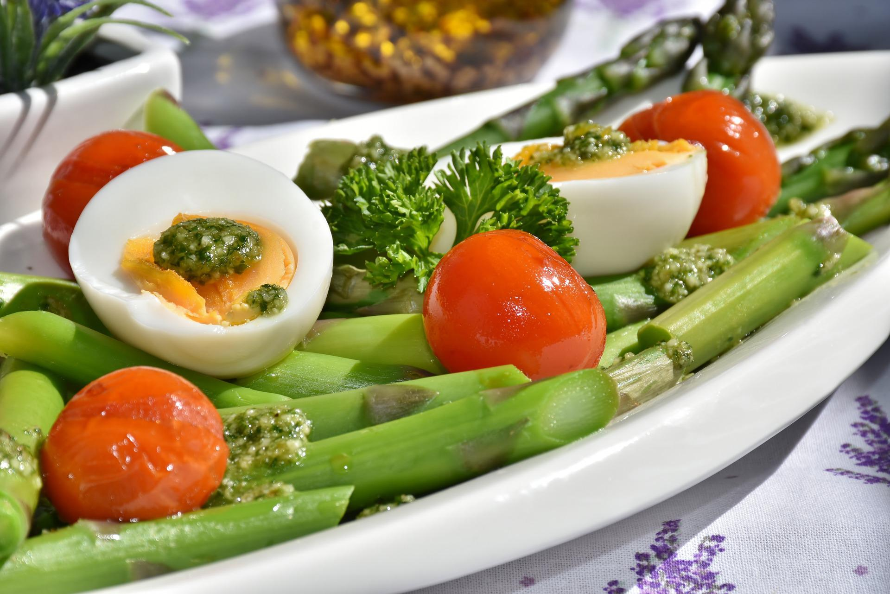

Why is it important to have a balanced diet?
A healthy diet is essential for good health and nutrition. It protects you against many chronic
noncommunicable diseases, such as heart disease, diabetes and cancer. Eating a variety of foods and consuming less salt,
sugars and saturated and industrially-produced trans-fats, are essential for healthy diet.
NEXT

How to manintain a balanced diet?
A balanced diet is a diet that contains differing kinds of foods in certain quantities and proportions
so that the requirement for calories, proteins, minerals, vitamins and alternative nutrients is adequate and a small
provision is reserved for additional nutrients to endure the short length of leanness. In addition, a balanced diet ought
to offer bioactive phytochemicals like dietary fiber, antioxidants and nutraceuticals that have positive health advantages.
A balanced diet should offer around 60-70% of total calories from carbohydrates, 10-12% from proteins and 20-25% of total
calories from fat.
NEXT

Health benefits of a balanced diet
Healthy eating increases energy, improves the way your body functions, strengthens your immune system and prevents weight gain. The other major benefits are:
Meets your nutritional need. A varied, balanced diet provides the nutrients you need to avoid nutritional deficiencies.
Prevent and treat certain diseases. Healthful eating can prevent the risk of developing certain diseases such as diabetes, cancer and heart disease. It is also helpful in treating diabetes and high blood pressure.
Following a special diet can reduce symptoms, and may help you better manage an illness or condition.
Feel energetic and manage your weight. A healthy diet will assist you to feel higher, provide you with more energy, and help you fight stress.
Food is the mainstay of many social and cultural events. Apart from nutrition properties, it helps facilitate connections between individuals.